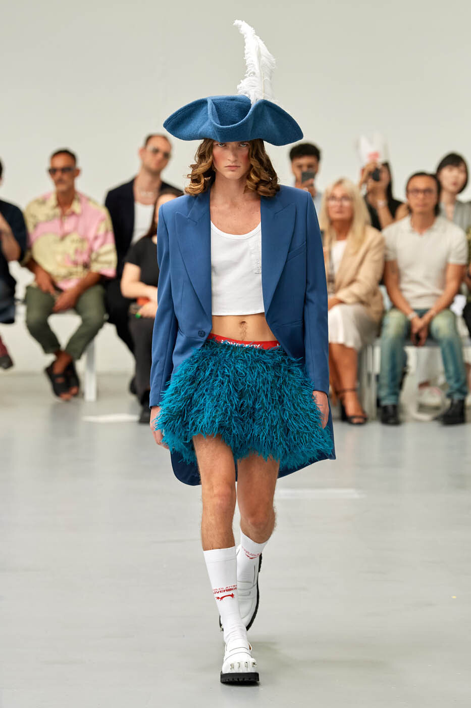
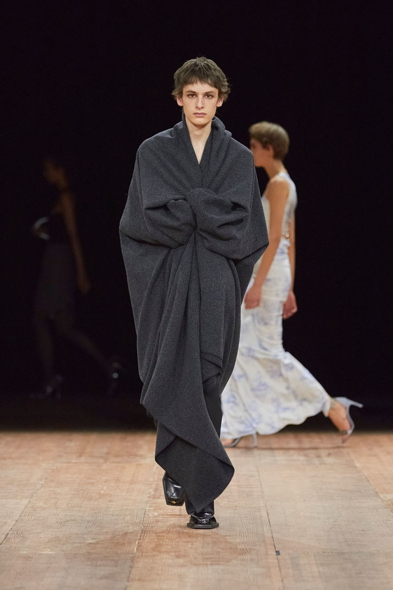
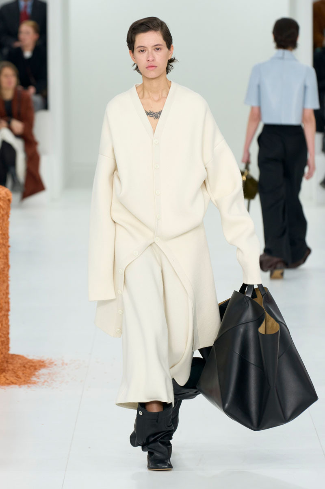
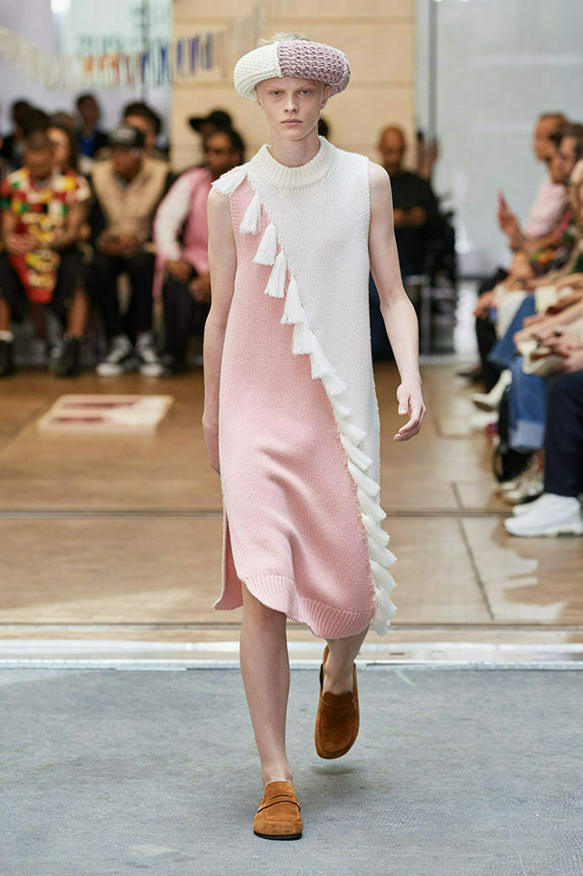
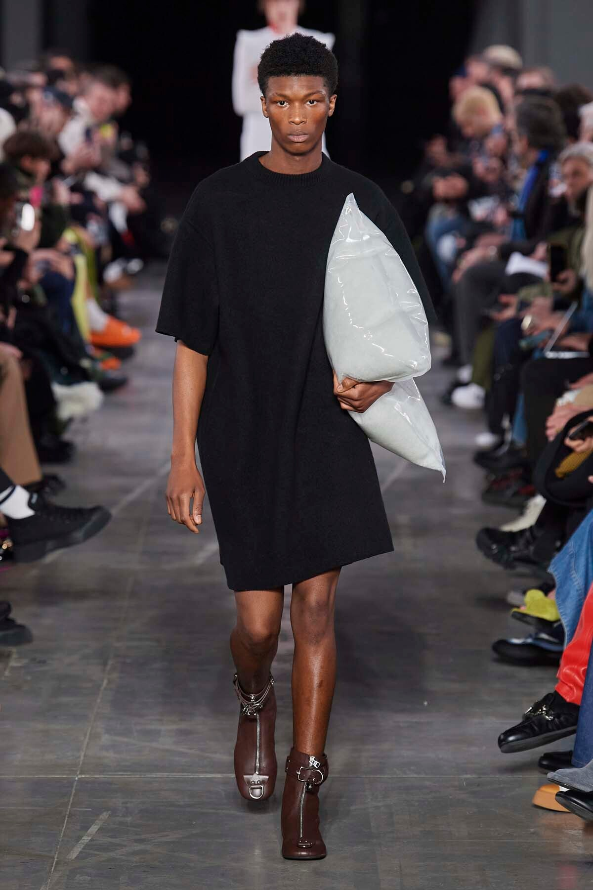
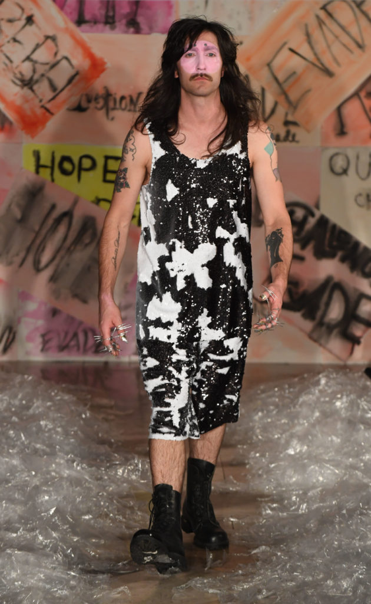
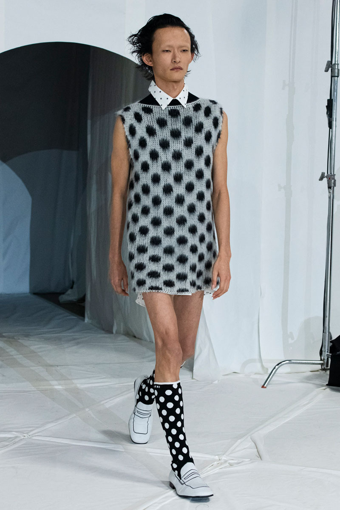

Мы всегда заботимся о наших студентах. Поэтому вот самые топовые модные тенденции этого года, чтобы знать, что достать из глубин шкафа, а что оставить в прошлом году 😍😍
- 1 -
Осень окончательно вступила в свои права. Каждый день готов дарить сюрпризы в виде ветра, дождя и слякоти. Выбегая из дома рано утром, хочется укутаться потеплее, чтобы противостоять осенней непогоде. А как же мода и стиль? Неужели придется забыть на холодное время года про модные тенденции и обернув несколько раз вокруг шеи свой самый теплый шарф и шапку, спасаться бегством от вездесущего осеннего ветра и дождя?
Смело и открыто, как представители светлой стороны моды и стиля, заявляем, что ни в коем случае! Отметаем мысли о том, что вам нечего надеть в такой холод и копаем глубже, вспоминая свои предпочтения, а заодно и свой шкаф.
Осень и зима – это лишний повод потренироваться в познании себя, своего стиля и потратить, может быть, чуть больше времени на утренний ритуал превращения в прекрасного лебедя, а наши советы помогут вам сделать это непринужденно и без особых затрат.🥰
Очень важно соизмерять актуальные тренды и тенденции со своими предпочтениями. Советуем научиться ладить с собой настоящим и улавливать современные модные веяния, комбинируя их с тем, что вы любите и что вам нравится.




Весна диктует свои правила: душа и тело требуют легкости, яркости, новизны и ощущения уверенности!🌸 Все это, и даже больше, могут нам подарить трендовые новинки этого сезона. Именно они способны занести ветер свободы и чувство обновления в наш гардероб и сделать его по-настоящему модным.
Ни один стильный весенний гардероб не обойдется этой весной без широких брюк: прямого фасона, средней, высокой или низкой посадки, а если еще и яркого модного оттенка – теплая весна, а за ней и лето, возможно будут готовы не заканчиваться еще долго!😊😊
Самой распространенной верхней одеждой на весну является пальто и куртка. О них написано и известно очень много, но сейчас давайте о главном: качественный и натуральный состав и актуальные модели творят чудеса! И тогда пальто становится вашим главным украшением, а куртка практичным и теплым штрихом вашего повседневного образа.
Актуальное пальто может быть яркого или, наоборот, спокойного оттенка, свободного кроя и длиной ниже колена.



Лето – самое подходящее время года для ярких экспериментов в одежде, стильных образов и вдохновляющих отражений в зеркале, время, когда вы можете себе позволить чуть больше, чем обычно в выборе одежды.
Платья и сарафаны... Конечно, без них никуда: абсолютно любой длины на ваш вкус и предпочтения, из натурального материала, льна или хлопка, яркого цвета или принта, свободного или не очень кроя – все в ваших руках!
А что насчёт шорт? Практично, стильно и тысяча вариантов разнообразных образов именно с ними гарантированы! 😃
Помните, что мода - это возможность выразить свою индивидуальность. Не стесняйтесь экспериментировать и сочетать разные стили и элементы, чтобы создать уникальный образ, который будет отражать вашу личность!!! 😉